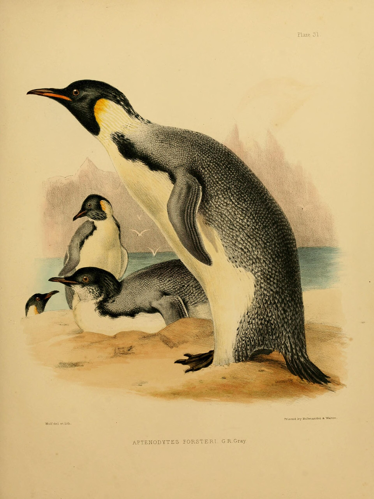
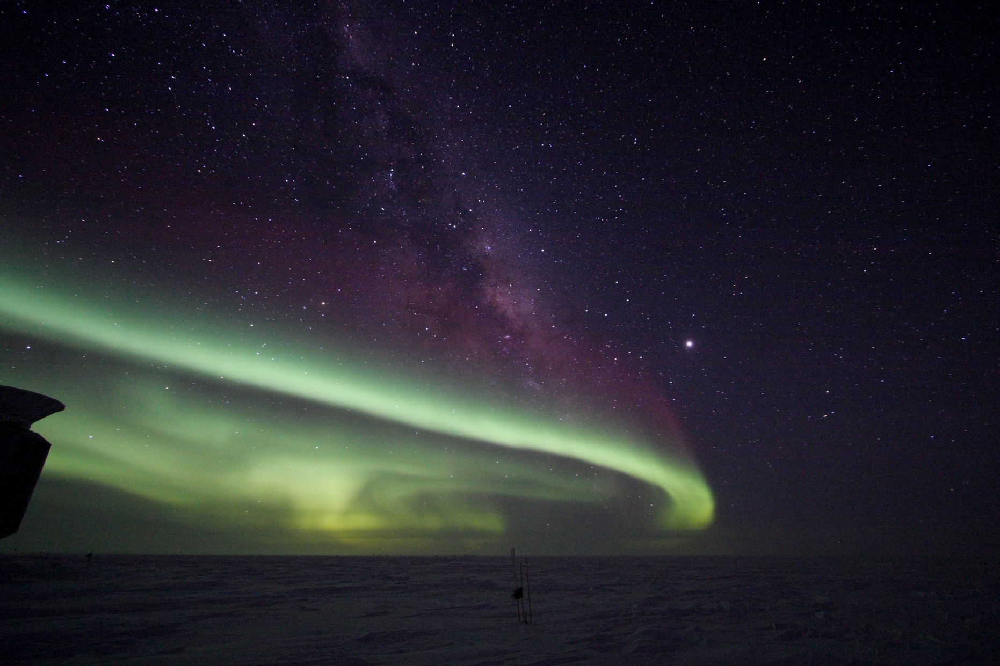
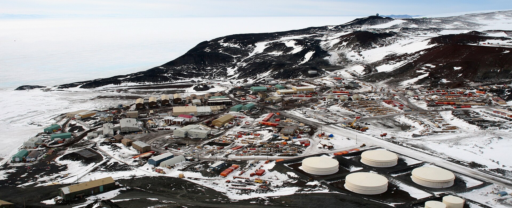

Überblick
Antarktika (auch Antarktis im weiteren regionalen Sinn) ist der Kontinent um den Südpol. Der Name bedeutet sinngemäß „gegenüber der Arktis“. In der physischen Geografie ist Antarktika der fünftgrößte Kontinent – größer als Ozeanien/Australien und Europa, kleiner als Asien, Afrika, Nordamerika und Südamerika. Fast die gesamte Landmasse ist von einem gewaltigen Inlandeis bedeckt. Die Drake-Passage trennt die Antarktische Halbinsel vom südlichen Südamerika; Rossmeer und Weddellmeer schneiden tief in den Kontinent ein und verleihen ihm eine birnenförmige Silhouette.
Antarktika hat keine permanente zivile Bevölkerung und keine Staaten im üblichen Sinn. Sieben Länder erhoben vor dem Antarktis-Vertrag Gebietsansprüche; der Vertrag friert diese Ansprüche ein und stellt den Kontinent unter ein Regime von Frieden und Wissenschaft. Menschen sind saisonal oder ganzjährig an Forschungsstationen präsent – als Forschende und Unterstützungspersonal, nicht als Siedlergesellschaft mit Städten. Der Abschnitt „Menschen und Regionen“ beschreibt deshalb Forschungspräsenz und Wissenschaftsgeopolitik, keine Metropolregionen. Explorationsgeschichte von Cook über Amundsen und Scott bis Shackleton gehört zum kulturellen Gedächtnis, wird hier aber nur angerissen: Die „heroische“ Phase zielte oft auf den Pol, die moderne Phase auf systematische Messung. Eisbohrkerne liefern Klimaarchive über Hunderttausende Jahre; Neutrino-Observatorien und Astronomie nutzen die Klarheit und Trockenheit des Plateaus.
Die Bedeutung Antarktikas reicht über die Eisfläche hinaus: Das Inlandeis speichert enorme Mengen gefrorenen Süßwassers; die umgebenden Meere treiben globale Umwälzzirkulation; Eis und Albedo beeinflussen den Strahlungshaushalt der Erde. Veränderungen der Eismasse sind zentral für den Meeresspiegel – Aussagen dazu gehören in aktuelle Klimaberichte, nicht in erfundene Einzelzahlen.
Physische Geografie

Inlandeis und Schelfeis
Der antarktische Eisschild bedeckt annähernd 14 Millionen Quadratkilometer und ist die größte zusammenhängende Eismasse der Erde. Zusammen mit dem grönländischen Schild enthält das Landeis den Großteil des irdischen Gletschereises; Schätzungen zum Anteil am gesamten Süßwasser der Erde liegen je nach Definition bei deutlich über der Hälfte (häufig zitiert: über 68 Prozent für beide Schilde gemeinsam). Mächtigkeiten von mehreren Kilometern kommen vor; ein vollständiges Abschmelzen würde den globalen Meeresspiegel um viele Dutzend Meter anheben – ein Szenario der Fernzukunft, das die Größenordnung verdeutlicht, nicht eine Prognose für dieses Jahrhundert.
An den Küsten setzen Schelfeise (u. a. Ross-, Filchner-Ronne-Schelf) das Inlandeis als schwimmende Platten fort. Gletscher und Eisströme bewegen Eis vom Inneren zur Küste; Kalben und Schmelzen bestimmen die Massenbilanz. Im Winter wächst das Meereis um den Kontinent stark an und schrumpft im Sommer wieder – die saisonale Amplitude ist enorm, die genauen Flächen schwanken von Jahr zu Jahr.
Transantarktisches Gebirge und Ost/West
Die Transantarktischen Berge ziehen sich über mehr als 3.000 Kilometer und trennen Ostantarktika (größer, geologisch älter, Schildcharakter) von Westantarktika (jünger, stärker von Vulkanismus und Sedimenten geprägt, teils unter dem Meeresspiegel liegendes Bett unter dem Eis). Ohne Eis träte Ostantarktika als große Landmasse hervor, Westantarktika eher als Insel- und Halbinselarchipel. Der Vinson-Massiv in den Ellsworth Mountains ist mit rund 4.900 Metern der höchste Gipfel des Kontinents. Der Mount Erebus auf der Ross-Insel gilt als südlichster aktiver Vulkan. Nur ein sehr kleiner Anteil der Oberfläche ist eisfrei (u. a. Trockentäler, Nunataks, Teile der Halbinsel).
Südlicher Ozean
Die Meere um Antarktika sind tief und nährstoffreich. Auftrieb speist Phytoplankton und Krill – Grundlage für Fische, Pinguine, Robben und Wale. Die antarktische Konvergenz markiert den Übergang zu wärmeren Wassermassen. Antarktisches Bodenwasser ist dicht und beteiligt sich an der globalen thermohalinen Zirkulation. Der maritime Gürtel gehört ökologisch und klimatisch zum antarktischen System, auch wenn der Kontinent selbst eisdominiert bleibt.
Flora, Fauna und Küstenökologie
Auf dem Eis selbst gedeihen kaum höhere Pflanzen; Flechten, Moose und Algen besiedeln eisfreie Nischen, vor allem an der Halbinsel und auf Inseln. Das Leben konzentriert sich im Meer und an den Küsten: Pinguine (u. a. Kaiser-, Adelie-, Zügelpinguine), Robben (Weddell-, Krabbenfresser-, Seeleoparden) und zahlreiche Walarten nutzen den Krillreichtum. Terrestrische Säugetiere fehlen als heimische Fauna; eingeschleppte Arten auf Subantarktis-Inseln sind ein Schutzproblem. Strenge Biosicherheitsregeln an Stationen sollen Einschleppung und Störungen minimieren. Die Küstenökologie ist empfindlich gegenüber Meereisverlust, Überfischung und lokalem Tourismusdruck.
Klima

Antarktika ist extrem kalt und – im Inneren – extrem trocken: Der kontinentale Kern gilt als polarer Wüstenraum, weil der Jahresniederschlag (fast nur als Schnee) gering ist, oft nur wenige Zentimeter Wasseräquivalent. Küstengebiete sind milder; Sommerwerte können dort um den Gefrierpunkt liegen, während das Hochplateau tief unter −20 °C im Sommer und unter −60 °C im Winter bleiben kann. An der russischen Station Wostok wurde 1983 eine Lufttemperatur von −89,2 °C gemessen – lange der Kälterekord für bodengestützte Messungen; satellitengestützte Auswertungen haben später noch niedrigere Oberflächenwerte in der Ostantarktis berichtet.
Katabatische Winde strömen vom kalten Plateau talwärts und können Stürme an der Küste verstärken. Die Polarnacht und der Polartag bestimmen den Jahresgang von Licht und Energie. Antarktika reflektiert durch hohe Albedo viel Sonnenstrahlung; Veränderungen der Eisbedeckung koppeln an den globalen Strahlungshaushalt. Die Ozonschicht über der Antarktis („Ozonloch“) war und ist ein zentrales Thema der Atmosphärenforschung; internationale Abkommen haben den Ausstoß ozonschädigender Stoffe begrenzt. Regionale Unterschiede sind groß: Teile der Halbinsel haben sich stärker erwärmt als das innere Ostantarktika; Eismassenänderungen sind räumlich differenziert und Gegenstand intensiver Fernerkundung.
Menschen und Regionen

Keine Siedlungskontinente – Forschungspräsenz
Antarktika kennt keine Hauptstädte, keine Bauern und keine dauerhafte Zivilgesellschaft im üblichen Sinn. Die menschliche Geografie besteht aus Forschungsstationen, Feldlagern und saisonaler Logistik. Die Zahl der Personen schwankt stark: im Sommer typischerweise einige Tausend, im Winter deutlich weniger (Größenordnungen um etwa 1.000 ganzjährig Anwesende werden häufig genannt; genaue Zahlen ändern sich mit Programmen und Jahren). Stationen wie McMurdo (USA), Davis (Australien), Neumayer (Deutschland), Wostok (Russland) oder Esperanza (Argentinien) dienen Glaziologie, Klimaforschung, Astronomie, Biologie und Geologie. Versorgung erfolgt über Schiffe in der eisfreien Saison und über Flugzeuge, abhängig vom Wetter.
Tourismus hat zugenommen und wird durch Richtlinien und Betreiberverbände reguliert, um Umweltbelastung zu begrenzen. Geburten auf Stationen sind Ausnahmeereignisse und ändern nichts am Fehlen einer Siedlungskontinuität.
Antarktis-Vertrag und Wissenschaftsgeopolitik
Der Antarktis-Vertrag wurde am 1. Dezember 1959 in Washington von zwölf Staaten unterzeichnet, deren Wissenschaftlerinnen und Wissenschaftler im Internationalen Geophysikalischen Jahr 1957/58 aktiv waren; er trat 1961 in Kraft. Inzwischen haben deutlich mehr Staaten (Stand laut Sekretariat: 58 Vertragsparteien) den Vertrag angenommen. Kernpunkte: Nutzung nur für friedliche Zwecke; Freiheit der wissenschaftlichen Forschung und Zusammenarbeit; freier Austausch von Beobachtungen; Verbot neuer Souveränitätsansprüche und Einfrieren bestehender Positionen (Artikel IV); Inspektionsrechte. Militärstützpunkte und Kernwaffentests sind ausgeschlossen; wissenschaftliche Unterstützung durch Militärlogistik ist in der Praxis üblich, solange sie dem Friedensgebot entspricht.
Sieben Staaten (Argentinien, Australien, Chile, Frankreich, Neuseeland, Norwegen, Vereinigtes Königreich) halten historische Gebietsansprüche; andere erkennen sie nicht an; die USA und Russland behalten sich Anspruchsgrundlagen vor. Der Vertrag macht Antarktika zu einem einzigartigen Raum internationaler Governance: Souveränität wird nicht „gelöst“, sondern ruhend gestellt, während Wissenschaft und Umweltschutz (u. a. Umweltschutzprotokoll von 1991) Vorrang haben. Fischerei und Ressourcenfragen werden in ergänzenden Abkommen (z. B. CCAMLR) geregelt. Meeresbiologie und Krillfischerei sind dabei heikel: Krill ist Schlüsselart des Nahrungsnetzes; Quoten und Schutzgebiete sollen Übernutzung und Störungen von Pinguinen und Walen begrenzen. Debatten über möglichen zukünftigen Bergbau unter dem Eis stoßen an das Umweltschutzprotokoll, das mineralische Nutzung (außer wissenschaftlich) weitgehend ausschließt – ein rechtlicher Schutz, der politisch immer wieder verteidigt werden muss. Konflikte um Rohstoffe, Tourismusdruck und Klimaverantwortung bleiben politisch virulent – aber sie spielen sich im Rahmen des Vertragssystems ab, nicht als klassische Kolonialisierung mit Städten.
Logistik, Alltag und Symbolik
Alltag an Stationen ist von Isolation, Teamarbeit und strenger Planung geprägt: Lebensmittel und Treibstoff müssen für Monate reichen; medizinische Evakuierung ist wetterabhängig und teuer. Hydroponik-Gewächshäuser liefern an manchen Standorten frisches Gemüse und psychologisch wichtigen „Grünraum“ in der Polarnacht. Feiern wie das Midwinter-Dinner knüpfen an Expeditionsgeschichte an. Antarktika ist zugleich Labor und Symbol: für internationale Kooperation, für Klimakrise und für die Frage, ob Commons jenseits nationaler Souveränität dauerhaft geschützt werden können. Die geografische Lektion lautet: Ein Kontinent ohne Städte kann trotzdem dicht mit Recht, Wissenschaft und globaler Verantwortung besetzt sein – und bleibt physisch der kälteste, trockenste und windreichste Großraum der Erde.
Antarktika ist damit der Kontinent, an dem Geografie, Völkerrecht und Planetensystem am engsten ineinandergreifen: Eis als Klimaarchiv, Stationen als soziale Mikrogesellschaften, der Vertrag als Experiment friedlicher Internationalisierung am Südpol.
Vergleiche mit der Arktis (kein Kontinent unter dem Eis, sondern Ozean mit Meereis und umgebenden Landmassen) helfen, Antarktika als echten Kontinent zu verstehen. Während die Arktis von Anrainerstaaten umgeben und intensiver genutzt wird, bleibt der Südpol kontinental, dünn besetzt und vertraglich internationalisiert. Die geografische Nachbarschaft zu Südamerika über die Drake-Passage und die wissenschaftliche Kooperation mit Stationen vieler Staaten machen Antarktika dennoch zu einem vernetzten, nicht „leeren“ Raum.
Quellen
- Encyclopaedia Britannica – „Antarctica“: https://www.britannica.com/place/Antarctica
- Encyclopaedia Britannica – „The Antarctic Treaty“: https://www.britannica.com/place/Antarctica/The-Antarctic-Treaty
- Encyclopaedia Britannica – „Transantarctic Mountains“: https://www.britannica.com/place/Transantarctic-Mountains
- Antarctic Treaty Secretariat – „The Antarctic Treaty“: https://www.ats.aq/e/antarctictreaty.html
- National Geographic Education – „Antarctica“: https://education.nationalgeographic.org/resource/antarctica/
- National Snow and Ice Data Center – Ice Sheet Quick Facts: https://nsidc.org/learn/parts-cryosphere/ice-sheets/ice-sheet-quick-facts
- COMNAP – Antarctic Facilities Information: https://www.comnap.aq/antarctic-facilities-information
- Wikipedia – „Antarctic ice sheet“: https://en.wikipedia.org/wiki/Antarctic_ice_sheet
- Wikipedia – „Research stations in Antarctica“: https://en.wikipedia.org/wiki/Research_stations_in_Antarctica
- British Antarctic Survey – About Antarctica: https://www.bas.ac.uk/about/antarctica/
- NASA – Antarctic ice / climate overview: https://www.nasa.gov/
- CCAMLR – Commission for the Conservation of Antarctic Marine Living Resources: https://www.ccamlr.org/
- Alfred-Wegener-Institut – Antarktisforschung (Hintergrund): https://www.awi.de/